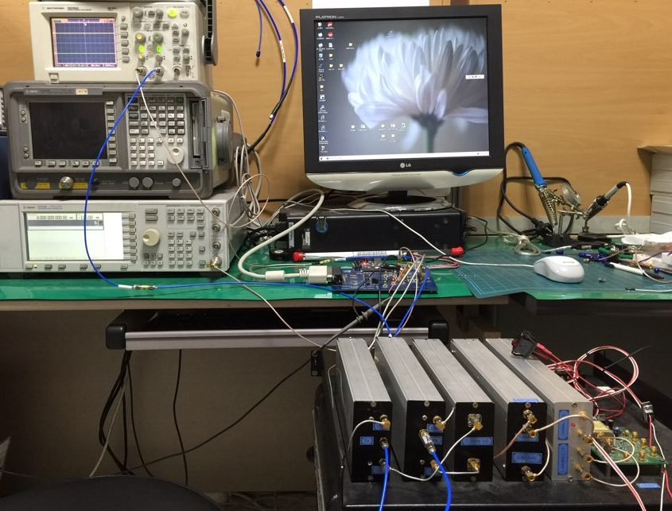

연구실적 · 국내전문학술지
DDS 기반의 소형 SAR 시스템 송수신장비 개발
A Development of DDS Based Chirp Signal Generator and X-Band Transmitter-Receiver for Small SAR Sensor

초록
무인항공기는 전투뿐만 아니라, 정찰, 관측 탐사 등 여러 분야에서 이용할 수 있고, 전천후 영상 수집이 가능한 SAR(Synthetic Aperture Radar) 기술과 함께 기존의 감시정찰 체계가 수행할 수 없던 임무영역까지로 그 능력이 확장될 것으로 보인다. 오늘날, 고효율 집적기술의 발전과 시스템 경량화 기술의 발전에 힘입어 무인항공기에도 경량의 SAR Sensor를 탑재하려는 연구와 수요가 증가하고 있다. 이에 따라, 본 논문에서는 SAR 시스템을 구성하는 핵심 모듈인 광대역 첩신호발생기를 DDS 디지털 소자 기반으로 개발하여 무인항공기용 신호 발생기와 송수신장비의 개발과정 및 결과를 기술하였다.
인용
송경민, 이기웅, 이창현, 이우경, 이명진, “DDS 기반의 소형 SAR 시스템 송수신장비 개발”, 한국전자파학회지 제27권 3호, 2016년 3월
BibTeX
@article{Song_2016,
title={A Development of DDS Based Chirp Signal Generator and X-Band Transmitter-Receiver for Small SAR Sensor},
volume={27},
ISSN={1226-3133},
url={http://dx.doi.org/10.5515/KJKIEES.2016.27.3.326},
DOI={10.5515/kjkiees.2016.27.3.326},
number={3},
journal={The Journal of Korean Institute of Electromagnetic Engineering and Science},
publisher={Korean Institute of Electromagnetic Engineering and Science},
author={Song, Kyoung-Min and Lee, Ki-Woong and Lee, Chang-Hyun and Lee, Woo-Kyung and Lee, Myeong-Jin},
year={2016},
month=Mar,
pages={326–329}
}